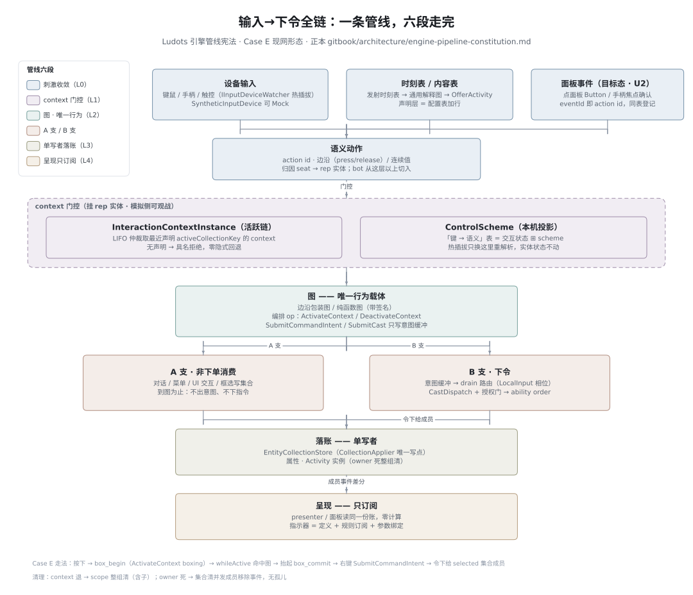
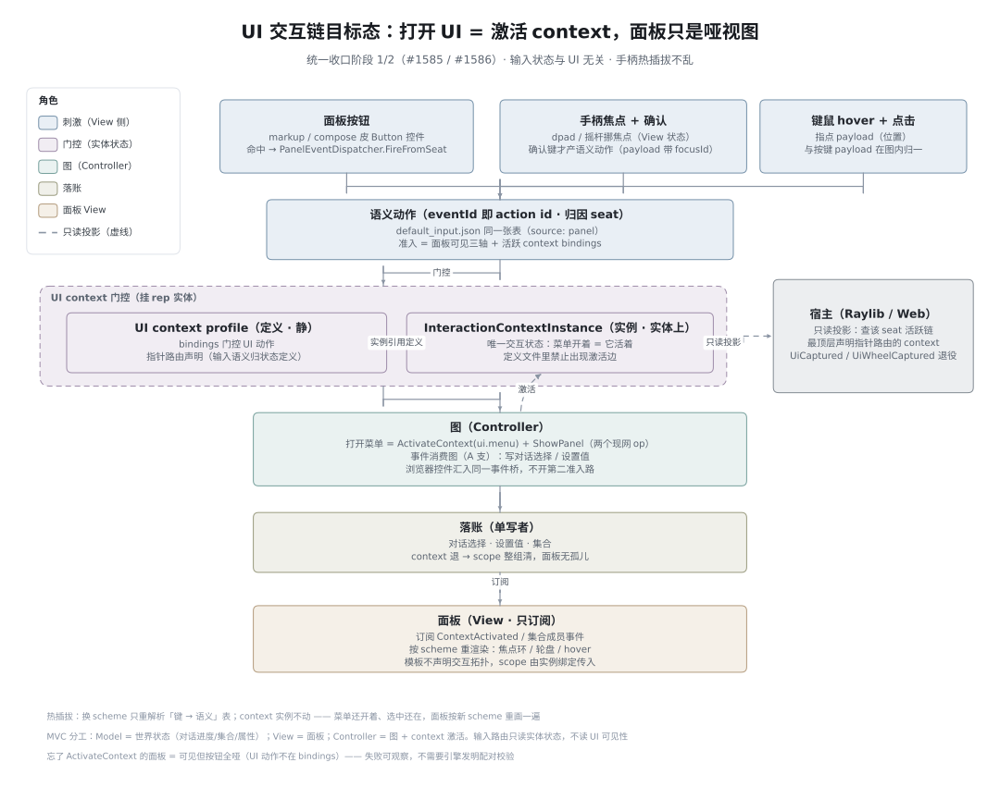

输入与 UI
一套管线，一切皆内容。设备、面板按钮、手柄焦点、内容时刻表，全部收敛为语义动作； 「打开一个 UI」= 激活一个 interaction context（挂实体），面板只是订阅世界的哑视图。 输入状态与 UI 无关——手柄热插拔只换控制方案重解析绑定，交互状态一个字节不动。
引擎管线宪法：六不变量
输入→下令、UI 面板、Activity 内容、呈现四条线的合同都是这六条的投影。 正本：engine-pipeline-constitution.md； 进度总账只认 图能力唯一入口（§3.6 四线总账）。
世界状态只住实体
context 实例、Activity 实例、集合、属性都在实体上——观战能读、回放能放。设备、键位、控制方案是本机投影，不进实体不进存档。
行为只在图里
激活边、条件求值、结算、意图组装都是图。声明字段要获得语义：通用解释图读它，或机械状态机；禁止私有 C# 解释器。
单写者 + 生命周期主人
集合只有 CollectionApplier 一个写点，面板显隐只有 PanelActivationApi 一个写者。context 退整组清、owner 死集合清——无第二写门、无孤儿。
呈现只订阅
presenter 与面板读图写好的同一份账，不判命中、不算成员。指示器 = presenter 定义 + 规则订阅 + 参数绑定，表现域零计算。
输入收敛为语义动作
设备按键、面板点击、bot 决策在语义动作层汇合，消费由活跃 context 决定。A 支（非下单）到图为止；B 支（意图→指令）只在下令时走。输入归属不读 UI 可见性。
定义与实例分离
profile / 模板是静的，激活边只在图里。这条撑起热插拔（换 scheme 只重解析）、确定性回放、观战。视图工件声明交互拓扑 = 违宪。
元规则：fail-closed、具名拒绝、零隐式回退。新能力开工前过「进门费五问」： 状态住哪个实体？行为在哪张图？谁是单写者？呈现订阅什么？刺激在哪层收敛？


UiCaptured 抑制旗子退役。焦点环是 View 状态，确认才产语义动作——焦点不进实体不进存档。| 阶段 | 单 | 做什么 | 硬验收（节选） |
|---|---|---|---|
| 0 止血 | #1584 | 合 #1487、修 CI 离线源红、治理一勺烩（#1014 关票、#1010 重写、registry 13 条死链、僵尸分支）、Activity v5（#1394）拍板 | verify 绿；main 上 Activity 域 0 failed；票面与实现一致 |
| 1 脊柱 当前主战场 | #1585 | U1：UI context 接管输入门控，UiCaptured/UiWheelCaptured 退役（PanelTemplate 零新字段）；U2：面板事件 → 语义动作（Button 控件 + 事件桥 + A 支消费图）。验收不造玩具：Activity 选项面板当第一个真客户。 |
全仓 grep UiCaptured = 0；菜单 context 激活时世界动作零指令；面板点击端到端落账；回放确定；热插拔 context 实例不动 |
| 2 形态 | #1586 | U3：面板生命周期绑 context scope（模板只声明种类，scope 由实例传入）+ 实例级受众；U4：手柄焦点导航（两套动作、图内归一）；PanelKit 浏览器栈归位裁定 | deactivate 后 lease 清零；双 seat 面板跟人；手柄 headless 全链；焦点不入实体 |
| 3 收口门 | #1587 | 宪法符合性架构测试（集合第二写者 / 呈现引用计算内核 / 视图持状态 / 事件链零调用 / 定义文件激活边 —— 全部测试红）+ 0 编码 ui_interaction 验收场 | 零编码主用例（面板自动可见且可点）；守卫进 CI；三种内容走同六段可对照参观 |
四条线快照（2026-09-20）
| 线 | 现状 | 最大缺口 |
|---|---|---|
| 输入→下令 | 切 0 合同 + 切 1 全链下单（SubmitCommandIntent 图桥 + 意图缓冲 + §12 drain）在分支 graph-input-order-chain，待进主干。宪法两份在 mods/showcases/case_e_selection/CaseESelectionMod/docs/ | 瞄准/蓄力/指示器图化、SubmitCast、引擎特权键拆除 |
| UI 面板 | A 线合同完备（模板/pin/集合/四皮三主题/显隐单写者），G12 12 案可装载有测试 | 事件链零生产接线——面板能看不能点（阶段 1 主修） |
| Activity 内容 | 运行时 A1–A9 已关；#1487 交付线被 CI 离线源红卡住，main 验收必红 | v5 设计定稿待拍板（#1394）；#1487 合入 |
| 呈现 | presenter scope 模型、指示器 presenter 化、四皮 0 C# 换肤已落地 | web 皮肤无直接自动化测试；registry 证据死链（阶段 0 清） |
正本导航
- 📐 引擎管线宪法：六不变量与一条管线——跨线结构正本（gitbook）
- 📊 图能力唯一入口 · §3.6 四线总账——进度、还开着的活、不该合的 PR，只认这一页
- 🎮 mods/showcases/case_e_selection/CaseESelectionMod/docs/input-config-constitution.html——输入配置宪法（五层/三不变量/§12 下单合同；随输入线分支进主干）
- 🧭 mods/showcases/case_e_selection/CaseESelectionMod/docs/input-command-system.html——输入概念宪法（scheme/context/audience、A/B 支、六类图）
- 🧩 面板矩阵——44 案一案一文，状态灯 🟢🔴⛔
- 🗺️ 一次输入的完整旅程——Machine · App · Seat · Device 四层 Wiki
- 🖼️ 架构图库——本页两张链路图已收录（Input & Interaction 分类）